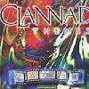

Celtic Lyrics Corner > Artists & Groups > Clannad > Themes > Both Sides Now
|  | Both Sides Now |
| Credits : | Joni Mitchell |
| Appears On : | Themes |
| Language : | English |
| Other Versions : | " Both Sides Now " on Aoife Ferry's album The Turning Of The Tide |
Lyrics :
Bows and flows of angel hair
And ice cream castles in the air
And feather canyons everywhere
I've looked at clouds that way
But now they only block the sun
They rain and snow on everyone
So many things I would have done
But clouds got in my way
I've looked at clouds from both sides now
From up and down and still somehow
It's cloud illusions I recall
I really don't know clouds at all
Moons and Junes and Ferris wheels
The dizzy dancing way you feel
As every fairy tale comes real
I've looked at love that way
But now it's just another show
You leave 'em laughing when you go
And if you care, don't let them know
Don't give yourself away
I've looked at love from both sides now
From give and take and still somehow
It's love's illusions I recall
I really don't know love at all
Tears and fears and feeling proud
To say, "I love you" right out loud
Dreams and schemes and circus crowds
I've looked at life that way
But now old friends are acting strange
They shake their heads, they say I've changed
But something's lost and something's gained
In living every day
I've looked at life from both sides now
From win and lose and still somehow
It's life's illusions I recall
I really don't know life at all